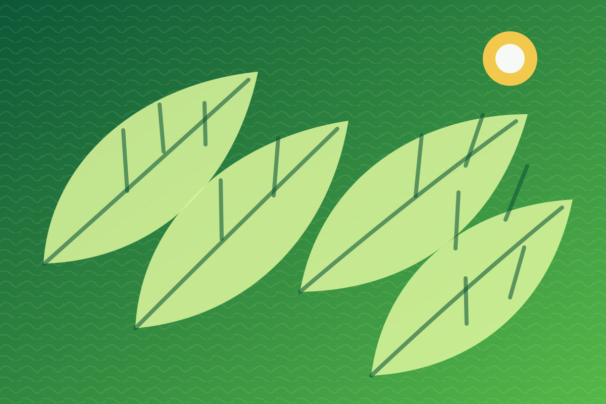
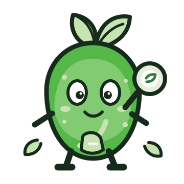
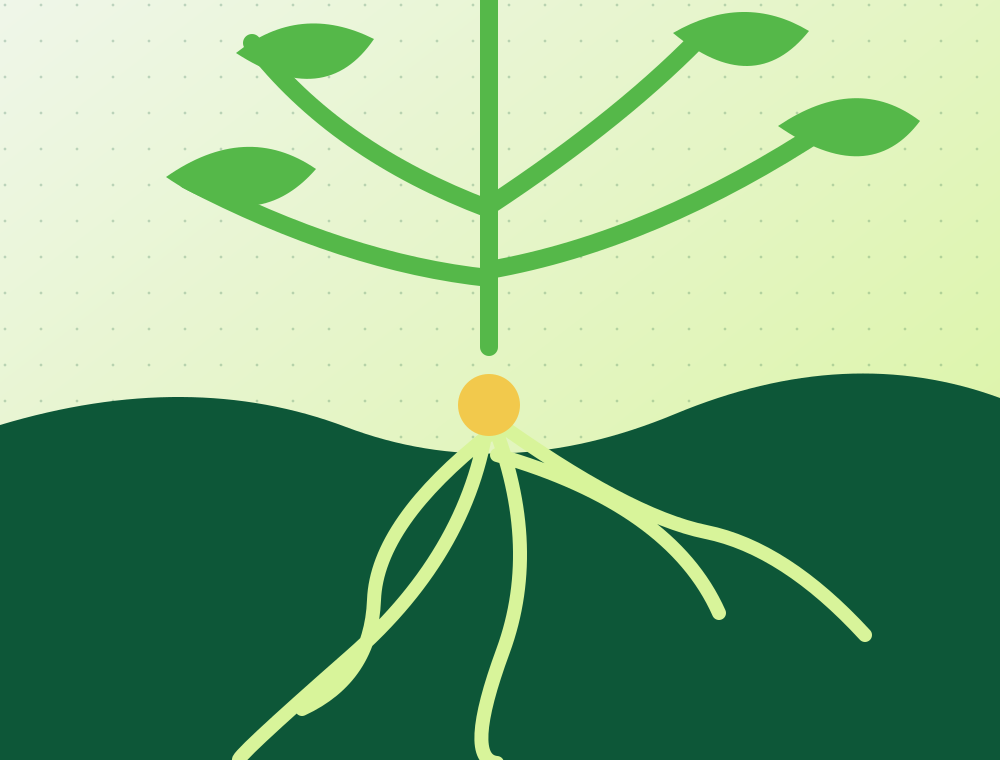
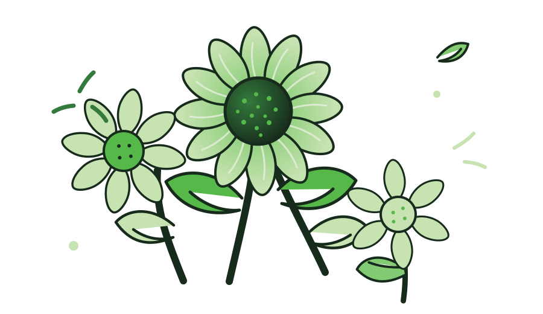

Explorar
Observar de perto, comparar, experimentar e descobrir novas perguntas.
Natureza, descoberta e convivência
A natureza desperta curiosidade, cria vínculos e transforma momentos do cotidiano em descobertas compartilhadas.



Natureza, lugar que compartilhamos
Conviver com a natureza amplia repertórios, desperta curiosidade e fortalece vínculos com os lugares que compartilhamos. A ONG pode aproximar famílias e comunidade dessas experiências, criando pontes entre aprendizagem, cuidado e participação.
Aprender também acontece vivendo
Um percurso de curiosidade, convivência e cuidado pode transformar momentos cotidianos em aprendizagem significativa.
Observar de perto, comparar, experimentar e descobrir novas perguntas.
Aprender em relação com a família, a comunidade e o lugar onde vivem.
Aproximar escola, família e comunidade em torno do cuidado com a natureza.
Explorar, criar vínculos e cuidar juntos: três fios que podem conduzir essa história.
Exemplos visuais · sem contato ativo
A mesma identidade acompanha as descobertas por email, celular e relógio.
Um detalhe na calçada. Um som entre árvores. Uma pergunta no meio do caminho. A natureza se revela quando a gente aprende a reparar.
Ver a ideiaUma carta breve para levar a curiosidade da infância até o dia a dia.
Sua empresa pode apoiar a aproximação entre famílias e natureza. Vamos conversar sobre patrocínio?
Uma ideia para levar para casaUma ideia curta, feita para caber na rotina, de uma tela à outra.
Uma pequena pausa para compartilhar novas descobertas com a família.
Nenhuma inscrição será feita.
Um lugar para cada intenção
Para famílias e educadores, uma forma de participar. Para quem apoia, um começo de conversa sobre parceria.
Famílias e educadores
Experiências que abrem espaço para imaginar, criar vínculos e descobrir com autonomia.
Conhecer a propostaApoiadores e parceiros
Escolas, coletivos e apoiadores podem ajudar a criar mais oportunidades de convivência e aprendizagem com a natureza.
Ver transparência e dadosConfiança também faz parte da experiência
A confiança cresce quando as famílias encontram informação clara, uma equipe próxima e espaço para participar. Cada contato pode abrir novas descobertas, fortalecer vínculos e aproximar a comunidade da natureza.
Um retrato simples de como a equipe pode acolher cada interesse e dar continuidade às conversas.

Meu trabalho com a Gina une CRM, conteúdo e relacionamento. Posso aplicar esse olhar à presença digital da ONG. Se fizer sentido, me chama para um papo breve.